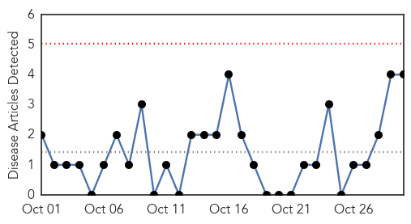
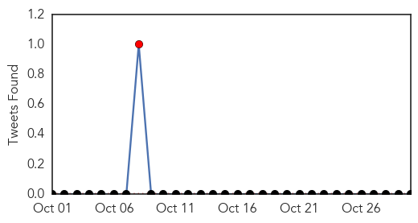
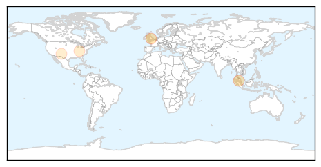
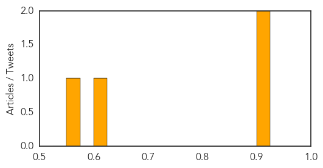

Toggle navigation
Early Warning
Daily Alerts
Pertussis / Whooping Cough
Oct 30, 2015
Compare to:
-
Dengue Fever
Hemmorhagic Fever
Mold/Fungal Infection
Influenza
Meningitis
Middle East Respiratory Syndrome
Cholera
Hepatitis
Chikungunya
Yellow Fever
Bubonic Plague
West Nile Virus
Swine Flu
Ebola
Measles
Unknown
Mumps
30 Day Trends
Web: 0
alerts
, 0
warnings
Twitter: 1
alerts
, 0
warnings
Top Articles:
0.913
Local News: Towcester and the villages in NN12 (NN12)
0.908
Health Ministry assures vaccines in Malaysia halal
0.605
West Kentucky Star
0.565
Increase in Whooping Cough in Curry County
Top Tweets:
No tweets found for Oct 30, 2015
Web/News Articles

Tweets

Article Locations

Article Confidences
